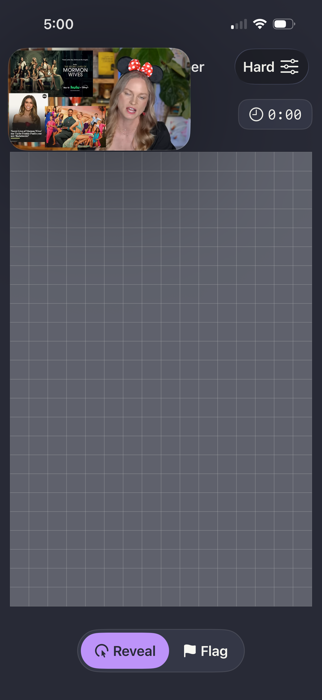
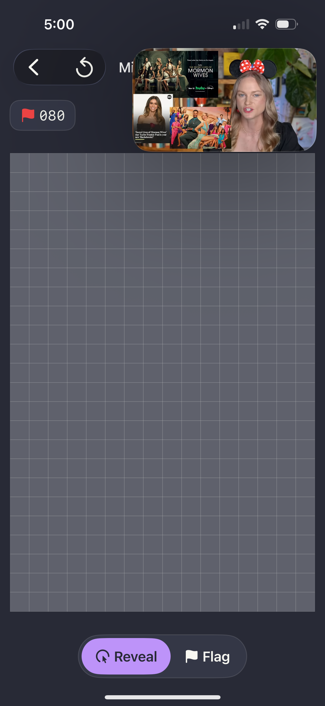
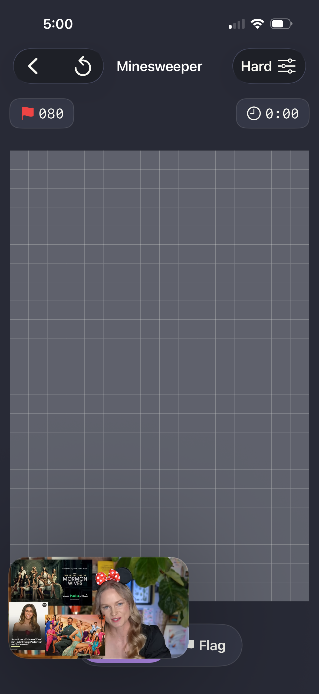
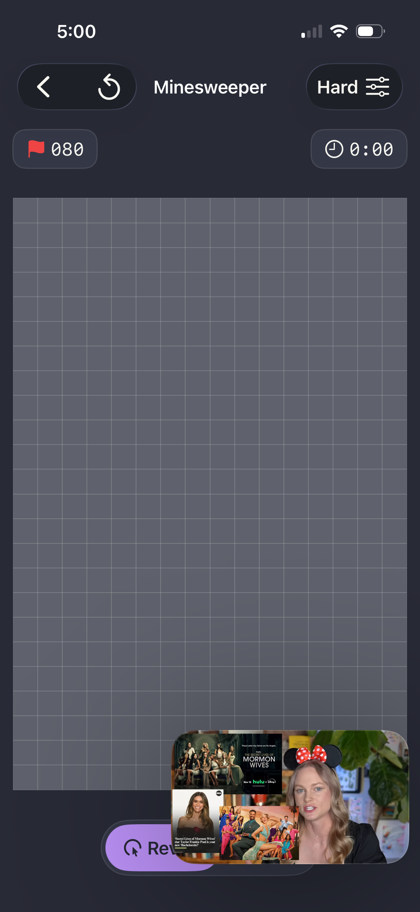

Minesweeper Hard (16x30) — Video Mode PiP zones (baseline squeeze)
Strategy decision deferred to 08-HARD-MINES-ADR.md (Plan 08-05).
This sketch shows only the baseline squeeze — the symptom under current
fixed cell size at 16x30, with Large-top PiP applied. The choice between
smaller cells / scroll-pan / pinch-zoom / warning+compromise is intentionally
NOT made here (per CONTEXT D-13). The ADR MUST deconflict with the existing
A11Y-05 / 06.1-03 MagnifyGesture + auto-scale system.
Background: mines-hard-classic-pip-large.png (real Large-top
encroachment showing the baseline squeeze). The Small TL/TR/BL/BR zones below
have real screenshot evidence in the canonical 4-corner Hard
Dracula set — shown below the radio control.
Large top
Large bottom
Small TL
Small TR
Small BL
Small BR
Show zone:
Per-zone behavior (Hard)
Zone
Controls
Board
Large top
Compact row bottom; collapse Settings into menu (Compromise step 4–5)
SQUEEZE — see ADR
Large bottom
Compact row top; same collapses
SQUEEZE — see ADR
Small TL
Back → top-right
Unchanged (real evidence)
Small TR
Settings → top-left
Unchanged (real evidence)
Small BL
BL → BR
Unchanged (real evidence)
Small BR
Reveal/Flag FAB → BL
Unchanged (real evidence)
Canonical 4-corner Small-PiP evidence (Dracula, Hard 16x30)
These four shots prove the Small-PiP rule "controls move, board unchanged"
holds even at the worst-case Hard board size. They are the inputs the 08-05 ADR
uses to justify NOT touching the small-PiP layout.

mines-hard-dracula-pip-small-tl.png

mines-hard-dracula-pip-small-tr.png

mines-hard-dracula-pip-small-bl.png

mines-hard-dracula-pip-small-br.png
Dracula Large-top baseline (for ADR)
See mines-hard-dracula-pip-large.png for the Large-top squeeze
under Dracula preset (CLAUDE.md §8.12 legibility audit). The ADR explores
strategy variants against this image plus the Classic equivalent.